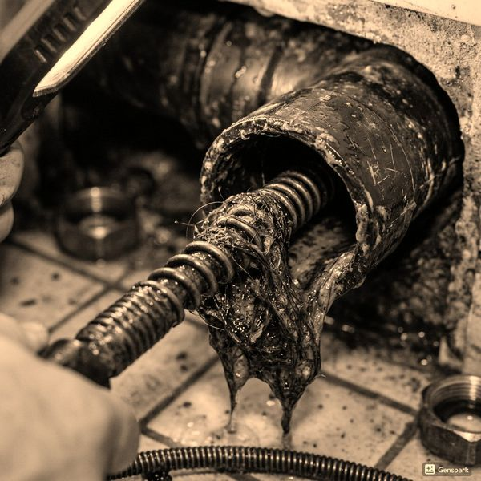
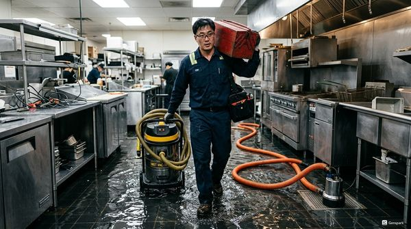

제우스시설관리 | 2025년 4월

고압세척기는 배관 문제 해결의 핵심 장비입니다. 최대 200bar(일반 가정용 수압의 약 100배)의 고압수를 사용하여 배관 내벽의 오염물을 완벽하게 제거합니다.
고압세척 전 반드시 내시경 카메라로 배관 내부 상태를 확인합니다. 배관의 재질, 상태, 오염 정도를 파악하여 적절한 수압과 노즐을 결정합니다. 심하게 노후된 배관에 무리한 수압을 가하면 파손될 수 있기 때문입니다.
오염 유형에 따라 다른 노즐을 사용합니다:
🔧 전진 노즐: 막힘 관통용, 강한 직진 수류
🔧 후진 노즐: 배관 내벽 세척용, 360도 분사
🔧 로터리 노즐: 강력한 회전 분사, 단단한 스케일 제거
🔧 체인 노즐: 나무 뿌리 등 단단한 이물질 절단
고압 호스를 배관에 투입하고, 배관 끝까지 전진시킨 후 천천히 후진하면서 세척합니다. 이때 후진 노즐의 역분사가 배관 내벽에 붙은 오염물을 깨끗이 씻어냅니다. 수압은 배관 상태에 따라 80~200bar로 조절합니다.
세척 완료 후 다시 내시경 카메라로 배관 내부를 확인합니다. 세척 전후 영상을 고객에게 보여드려 작업 결과를 직접 확인하실 수 있습니다.
인터넷에서 판매하는 가정용 고압세척기(10~30bar)는 배관 세척에 충분한 수압을 제공하지 못합니다. 배관 내벽에 달라붙은 기름때나 스케일을 제거하려면 최소 100bar 이상의 전문 장비가 필요합니다.
